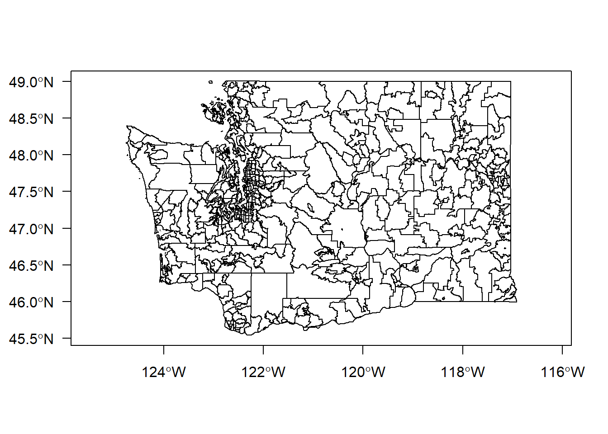
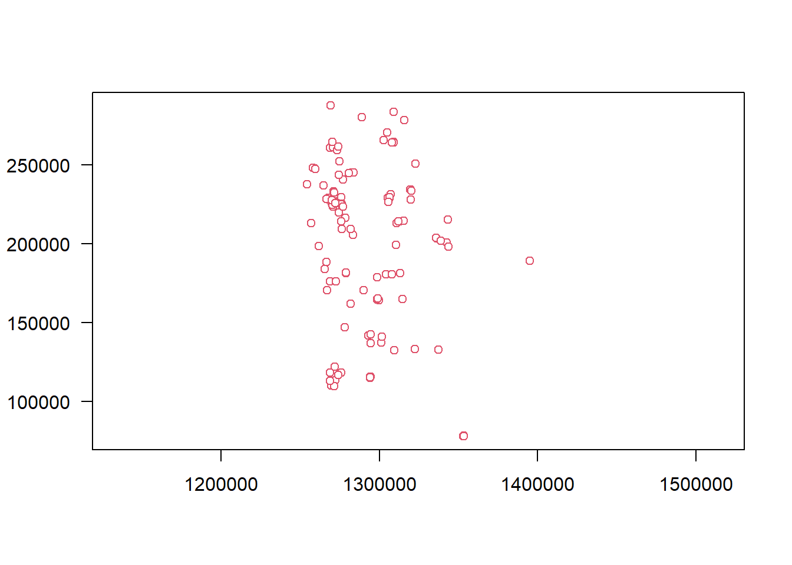

Chapter 4 Importing and exporting spatial data sets
4.1 Importing spatial data sets
The function st_read() is essentially wrapper to functions in the Geospatial Data Abstraction Library (GDAL), which includes translation functions for a large number of GIS data formats.
For this course we will focus on the use of Esri shape files and the Open Geospatial Consortium GeoPackage (GPKG) format, although st_read() can read many different types of spatial data formats, including PostGIS database connections.
We will pay particular attention to the GPKG format. Whereas a shape file can represent only a single spatial layer with a single geometric data type, a GPKG container may contain multiple objects. Also, because shape files are dependent on the dBASE tabular file format for storing attributes, there are various limitations such as 10-character uppercase column names. The underlying format for GPKG files is an SQLite database that can contain multiple different object types, including
- vector features
- tile matrix sets of imagery and raster maps at various scales
- attributes (non-spatial data)
- extensions
For those familiar with Esri software, the GPKG is similar in concept to the Esri geodatabase format. However, the GPKG is open source rather than proprietary, and can be accessed directly through either GIS software that can read the format, or within an SQLite database connection for SQL operations.
Let’s read the ZIP code data, which are in an Esri file geodatabase. In order to read some formats it is necessary to have drivers installed–therefore not all computers can necessarily open all file types. [Was anyone not able to open the GDB?]
In order to run this code chunk it will be necessary to edit the path where you downloaded the data (mydatadir).
# path to the data
mydatadir <- "H:/gis_in_r/data"
zippolyfname <- file.path(mydatadir, "zip_poly.gdb")
# avoid reading over and over
if (!exists("myzipcodes")) {
myzipcodes <- st_read(dsn = zippolyfname, layer = "zip_poly", as_tibble = TRUE, geometry_column = "Shape")
}# change the data frame's column names to lowercase
colnames(myzipcodes) <- tolower(colnames(myzipcodes))
# after renaming columns it is necessary to re-establish which column contains the geometry
st_geometry(myzipcodes) <- "shape"By default, st_read() prints some metadata during the read operation (which can be silenced using quiet = TRUE). This shows that the data set contains 30924 records and 9 columns (including the geometry columns). It is has multipolygon geometry, meaning that a single record can contain multiple rings (e.g., if a single ZIP code area straddled a stream), and its spatial reference is WGS84 (coordinates as degrees of latitude and longitude).
To make a manageable data set, let’s extract only those ZIP codes areas for Washington State.
zip_wa <- myzipcodes %>% dplyr::filter(state == "WA")The first several records:
head(zip_wa)## Simple feature collection with 6 features and 8 fields
## Geometry type: MULTIPOLYGON
## Dimension: XY
## Bounding box: xmin: -124.0031 ymin: 46.0401 xmax: -119.2583 ymax: 49.0014
## Geodetic CRS: WGS 84
## # A tibble: 6 x 9
## zip_code po_name state population pop_sqmi sqmi shape_length shape_area shape
## <chr> <chr> <chr> <int> <dbl> <dbl> <dbl> <dbl> <MULTIPOLYGON [°]>
## 1 00072 National~ WA -99 -99 1.22e3 4.20 0.386 (((-120.8514 49.00036, -120.8516~
## 2 00073 Usdoe Ha~ WA -99 -99 3.24e2 1.63 0.0984 (((-119.4532 46.67924, -119.4554~
## 3 00074 Yakima I~ WA -99 -99 1.35e3 4.51 0.408 (((-120.922 46.50699, -120.9216 ~
## 4 00076 Okanogan~ WA -99 -99 7.31e2 3.83 0.232 (((-119.9193 49.00003, -119.9192~
## 5 00195 Long Isl~ WA -99 -99 8.37e0 0.536 0.00254 (((-123.9722 46.48561, -123.972 ~
## 6 98001 Auburn WA 35721 2003. 1.78e1 0.628 0.00549 (((-122.2269 47.34481, -122.2269~We can now plot the ZIP code polygons. The default plot() function will create a separate graph for each variable; to only show the geometries, specify plotting only the column representing geometry.
plot(x = zip_wa$shape, axes = TRUE, las = 1)
Let’s now read the hospital shape file data.
hospitals <- st_read(file.path(mydatadir, "medical_facilities/medical_facilities.shp"))## Reading layer `medical_facilities' from data source `H:\gis_in_r\data\medical_facilities\medical_facilities.shp' using driver `ESRI Shapefile'
## Simple feature collection with 154 features and 14 fields
## Geometry type: POINT
## Dimension: XY
## Bounding box: xmin: 1254366 ymin: 78085.2 xmax: 1395044 ymax: 287325.1
## Projected CRS: NAD83(HARN) / Washington North (ftUS)This shows that there were 154 rows and 15 columns. Shape files do not use EPSG codes for spatial reference, but the proj4string shows the complete unequivocal projection/coordinate system reference.
Finally, let’s read the water areas.
h2o <- st_read(file.path(mydatadir, "wtrbdy/wtrbdy.shp"))## Reading layer `wtrbdy' from data source `H:\gis_in_r\data\wtrbdy\wtrbdy.shp' using driver `ESRI Shapefile'
## Simple feature collection with 15838 features and 16 fields
## Geometry type: MULTIPOLYGON
## Dimension: XY
## Bounding box: xmin: 607316.1 ymin: -256676.3 xmax: 1617446 ymax: 765087.4
## Projected CRS: NAD83(HARN) / Washington North (ftUS)# type = "n" not to plot, but sets xlim and ylim
plot(hospitals$geometry, type = "n", axes = TRUE, las = 1)
# ZIP code areas
plot(zip_wa$shape, add = TRUE, col = 0, border = 1)
# water
plot(h2o$geometry %>% st_transform(4326), col = "cyan", border = 1, add = TRUE)
# hospital points
plot(hospitals$geometry, pch = 21, col = 2, fill = 1, border = 2, add = TRUE)
box()
Well the hospitals and water bodies seemed to plot fine. Why don’t we see any ZIP code outlines as we did in QGIS? We will look at this more in Chapter 5.
4.2 Exporting spatial data
Similar to st_read(), st_write() can be used to export spatial data into a variety of formats. In this exercise we will export to shape files and GPKG databases.
First, we will export the Washington State ZIP code areas to a shape file. Similar to st_read(), st_write() prints an informative message.
st_write(obj = zip_wa, dsn = file.path(mydatadir, "zip_wa.shp"))## Warning in abbreviate_shapefile_names(obj): Field names abbreviated for ESRI Shapefile driver## Writing layer `zip_wa' to data source `H:/gis_in_r/data/zip_wa.shp' using driver `ESRI Shapefile'
## Writing 547 features with 8 fields and geometry type Multi Polygon.Switch to QGIS and load the exported Washington State ZIP codes as a layer. Note that the column names were truncated to 10 characters. Also note that although the ZIP code data are stored in WGS84 latitude and longitude, they seem to overlay nicely with the hospitals, which are stores in WA State Plane north coordinates. BONUS: is this “projection on the fly” a good or a bad thing? What do you think I think about it?

Next, we will write the first data sets we created (point, linestring, and polygon) and the WA ZIP code areas into a GPKG.
# 3 points
st_write(
obj = pts,
dsn = file.path(mydatadir, "r_gis.gpkg"),
layer = "pts",
append = TRUE,
delete_layer = TRUE
)## Deleting layer `pts' using driver `GPKG'
## Updating layer `pts' to data source `H:/gis_in_r/data/r_gis.gpkg' using driver `GPKG'
## Writing 3 features with 1 fields and geometry type Point.# line connecting two points
st_write(
obj = lnstr,
dsn = file.path(mydatadir, "r_gis.gpkg"),
layer = "lnstr",
append = TRUE,
delete_layer = TRUE
)## Deleting layer `lnstr' using driver `GPKG'
## Updating layer `lnstr' to data source `H:/gis_in_r/data/r_gis.gpkg' using driver `GPKG'
## Writing 1 features with 1 fields and geometry type Line String.# polygon connecting 3 points
st_write(
obj = plygn,
dsn = file.path(mydatadir, "r_gis.gpkg"),
layer = "plygn",
append = TRUE,
delete_layer = TRUE
)## Deleting layer `plygn' using driver `GPKG'
## Updating layer `plygn' to data source `H:/gis_in_r/data/r_gis.gpkg' using driver `GPKG'
## Writing 1 features with 0 fields and geometry type Polygon.# WA zip codes
st_write(
obj = zip_wa,
dsn = file.path(mydatadir, "r_gis.gpkg"),
layer = "zip_wa",
append = TRUE,
delete_layer = TRUE
)## Deleting layer `zip_wa' using driver `GPKG'
## Updating layer `zip_wa' to data source `H:/gis_in_r/data/r_gis.gpkg' using driver `GPKG'
## Writing 547 features with 8 fields and geometry type Multi Polygon.Finally, add these data sets to your QGIS Map.


4.3 Conclusion
Using st_read() and st_write() allow the reading and writing of a number of different GIS file formats. A recommended best practice is to keep all data sets for a particular project in a single GPKG file, allowing GIS analysis as well as generic database management and analysis.